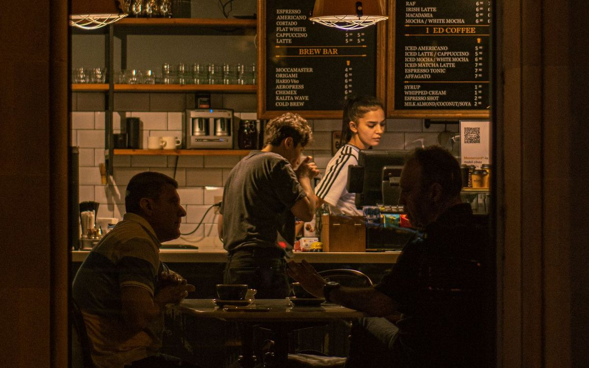

The influencer took the free meal and never posted. What can I do?
By Jeff, Founder, Magpie · October 30, 2026
If the deal was a handshake, your honest options are one polite follow-up and a lesson learned: you cannot force a post, and a forced post would be worthless anyway. The real fix is structure before the visit. On Magpie it cannot burn you: the visit is redeemed in the app, the post is tracked against a deadline, and if a week passes with no post, that visit does not count against your plan and is replaced under the Visit Guarantee.
After the fact: one follow-up, then let it go. Before the next one: get the deliverable, the deadline and the disclosure in writing, or run the visit somewhere it is tracked. On Magpie, a visit with no post inside a week does not count and is replaced. That guarantee, not chasing, is the remedy.
What can you actually do?
Three moves, in order. Send one short follow-up naming what was agreed and asking when the post lands. Check whatever you put in writing: a message thread that states the deliverable and the date is an agreement, and it is worth one firm reminder. Then stop. Your comp cost was real, but your time is worth more than a public fight with a local creator your customers may follow.
Why does this keep happening to good owners? Because the usual comp runs on hope: a DM, a reservation, a nice evening, and no agreed deliverable, no deadline, and no record anywhere. Industry guides aimed at owners estimate roughly one in ten gifted creators never posts at all. The number matters less than the pattern: the no-post almost always traces back to a deal that was never written down, not to a creator who set out to scam anyone.
There is also a version of this story where the creator did post and the owner missed it, or posted to stories that expired. Before the follow-up, check the creator's grid and tagged photos for your business. If the post exists, the relationship is worth keeping.
How do you stop it happening again?
Four things agreed before anyone sits down: the exact deliverable, the deadline, the disclosure, and what the comp covers. That is the whole contract, and it fits in one message.
Name the deliverable
Not "a post about us," but the package. On Magpie that is the Standard Visit: 1 post or reel plus 1 story that shares the post, kept live for 30 or more days, in the creator's own voice.
Set the clock
A post about last night's dinner is a recommendation; a post about last month's is an archive. Magpie's goal is a post within 48 hours of the visit, with one week as the outside limit. Agree yours up front, whatever it is.
Track the visit itself
On Magpie the creator redeems a single-use code in the app at your business. That redemption records the visit and starts the clock, so "did they even come in" is never a question, and the delivered post is verified against the visit.
And keep the deal in the right lane from the start. A comped visit and a paid booking are different deals with different leverage: read is a comp enough, or do I owe cash too? before you mix them.
What happens on Magpie when a creator does not post?
The visit does not count, and it is replaced. Creators who miss posts also lose standing, because their delivery record is visible on their profile, which is the asset they are building.
If a booked creator does not show up or does not post, that visit does not count against your monthly visits. It is replaced. The guarantee applies to comped and paid visits alike, and it is credits, not cash: the plan you bought is a number of delivered visits, and the guarantee makes sure you receive them. On paid bookings the protection runs both ways, because the business's payment is held until the post is live.
That structure is why owners can comp without the knot in their stomach. The full model is explained in what is a comped creator visit, and the owner-side case for comping at all is in should I give influencers free food for posting?
Questions, answered straight
Can I make an influencer post after a free meal?
No. You cannot force a post, and you should never want a forced one: a post made under pressure reads like it. What you can do is agree the deliverable in writing before the visit, and work through a structure that tracks delivery. On Magpie, a visit with no post simply does not count and is replaced, so the leverage problem disappears.
How long should I wait before deciding a creator is not going to post?
Agree the deadline before the visit and judge against it. On Magpie the goal is a post within 48 hours of the visit, with one week as the outside limit. A post inside the week still counts as delivered, just late. A full week with no post is a no-delivery, and the Visit Guarantee replaces the visit.
What if the creator posted and then deleted it?
On Magpie the Standard Visit requires the post to stay live for 30 or more days, and delivery is tracked against that. A post that disappears inside that window is treated as not delivered. Off a platform, this is one more thing to put in writing before the visit: the deliverable, the deadline, and how long the post stays up.
Does the Magpie Visit Guarantee refund cash?
No. The guarantee replaces the visit: a visit with no post does not count against your monthly visits, and you get another visit in its place. It is credits, not cash, because the plan you bought is a number of delivered visits, and the guarantee makes sure you actually receive them.
Should I ever pay a creator before the post goes live?
Not directly into their hands. On Magpie paid bookings, the business pays when it books and the platform holds the money until the post is live, then releases it to the creator. Holding the payment, not the promise, is what makes the deadline real for both sides.
Run the next visit on rails
See what a comped creator visit includes, or browse the Learn hub for the full set of guides.